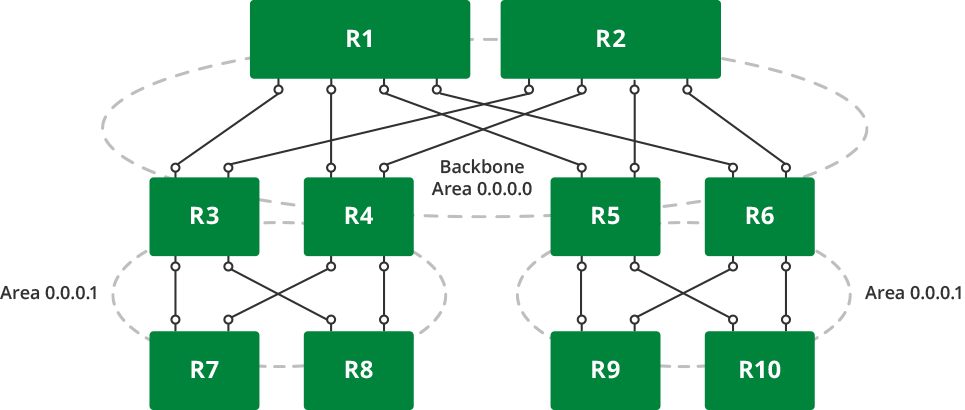
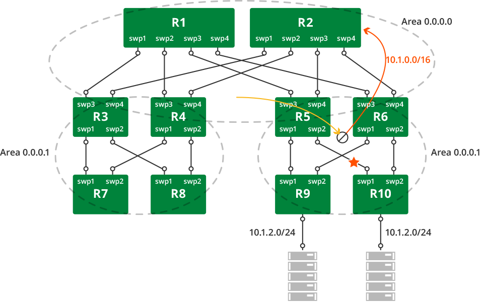

Open Shortest Path First - OSPF - Protocol
OSPFv2 is a link-state routing protocol for IPv4. OSPF maintains the view of the network topology conceptually as a directed graph. Each router represents a vertex in the graph. Each link between neighboring routers represents a unidirectional edge. Each link has an associated weight (called cost) that is either automatically derived from its bandwidth or administratively assigned. Using the weighted topology graph, each router computes a shortest path tree (SPT) with itself as the root, and applies the results to build its forwarding table. The computation is generally referred to as SPF computation and the resultant tree as the SPF tree.
An LSA ( link-state advertisement) is the fundamental quantum of information that OSPF routers exchange with each other. It seeds the graph building process on the node and triggers SPF computation. LSAs originated by a node are distributed to all the other nodes in the network through a mechanism called flooding. Flooding is done hop-by-hop. OSPF ensures reliability by using link state acknowledgement packets. The set of LSAs in a router’s memory is termed link-state database (LSDB), a representation of the network graph. Thus, OSPF ensures a consistent view of LSDB on each node in the network in a distributed fashion (eventual consistency model); this is key to the protocol’s correctness.
Contents
Scalability and Areas
An increase in the number of nodes affects OSPF scalability in the following ways:
-
Memory footprint to hold the entire network topology,
-
Flooding performance,
-
SPF computation efficiency.
The OSPF protocol advocates hierarchy as a divide and conquer approach to achieve high scale. The topology may be divided into areas, resulting in a two-level hierarchy. Area 0 (or 0.0.0.0), called the backbone area, is the top level of the hierarchy. Packets traveling from one non-zero area to another must go via the backbone area. As an example, the leaf-spine topology we have been referring to in the routing section can be divided into areas as follows:

Here are some points to note about areas and OSPF behavior:
-
Routers that have links to multiple areas are called area border routers (ABR). For example, routers R3, R4, R5, R6 are ABRs in the diagram. An ABR performs a set of specialized tasks, such as SPF computation per area and summarization of routes across areas.
-
Most of the LSAs have an area-level flooding scope. These include router LSA, network LSA, and summary LSA.
In the diagram, we reused the same non-zero area address. This is fine since the area address is only a scoping parameter provided to all routers within that area. It has no meaning outside the area. Thus, in the cases where ABRs do not connect to multiple non-zero areas, the same area address can be used, thus reducing the operational headache of coming up with area addresses.
Configuring OSPFv2
Configuring OSPF involves the following tasks:
-
Enabling the OSPF daemon
-
Enabling OSPF
-
Defining (Custom) OSPF parameters on the interfaces
Enabling the OSPF and Zebra Daemons
To enable OSPF, enable the zebra and ospf daemons, as described in Configuring Quagga, then start the Quagga service:
cumulus@switch:~$ sudo systemctl enable quagga.servicecumulus@switch:~$ sudo systemctl start quagga.serviceConfiguring OSPF
As discussed in Introduction to Routing Protocols, there are three steps to the configuration:
-
Identifying the router with the router ID.
-
With whom should the router communicate?
-
What information (most notably the prefix reachability) to advertise?
There are two ways to achieve (2) and (3) in Quagga OSPF:
-
The network statement under router ospf does both. The statement is specified with an IP subnet prefix and an area address. All the interfaces on the router whose IP address matches the network subnet are put into the specified area. OSPF process starts bringing up peering adjacency on those interfaces. It also advertises the interface IP addresses formatted into LSAs (of various types) to the neighbors for proper reachability.
cumulus@switch:~$ net add ospf router-id0.0.0.1cumulus@switch:~$ net add ospf network10.0.0.0/16area0.0.0.0cumulus@switch:~$ net add ospf network192.0.2.0/16area0.0.0.1The subnets can be as coarse as possible to cover the most number of interfaces on the router that should run OSPF.
There may be interfaces where it’s undesirable to bring up OSPF adjacency. For example, in a data center topology, the host-facing interfaces need not run OSPF; however the corresponding IP addresses should still be advertised to neighbors. This can be achieved using the passive-interface construct:
cumulus@switch:~$ net add ospf passive-interfaceswp10cumulus@switch:~$ net add ospf passive-interfaceswp11Or use the passive-interface default command to put all interfaces as passive and selectively remove certain interfaces to bring up protocol adjacency:
R3# configure terminalR3(config)# router ospfR3(config-router)# passive-interfacedefaultR3(config-router)# no passive-interfaceswp1 -
Explicitly enable OSPF for each interface by configuring it under the interface configuration mode:
cumulus@switch:~$ net add interface swp1 ospf area 0.0.0.0If OSPF adjacency bringup is not desired, you should configure the corresponding interfaces as passive as explained above.
This model of configuration is required for unnumbered interfaces as discussed later in this guide.
For achieving step (3) alone, the quagga configuration provides another method: redistribution. For example:
cumulus@switch:~$ net add ospf redistribute connectedRedistribution, however, unnecessarily loads the database with type-5 LSAs and should be limited to generating real external prefixes (for example, prefixes learned from BGP). In general, it is a good practice to generate local prefixes using network and/or passive-interface statements.
The OSPF setting log-adjacency-changes is enabled by default. It logs a single message when a peer transitions to/from FULL state.
Defining (Custom) OSPF Parameters on the Interfaces
There are a number of custom parameters you can define for OSPF, including:
-
Network type, such as point-to-point or broadcast.
-
Timer tuning, like a hello interval.
-
For unnumbered interfaces (see below), enable OSPF.
To see the list of options, type net add interface swp1 ospf, then press Tab.
cumulus@switch:~$ net add interface swp1 ospf network point-to-pointcumulus@switch:~$ net add interface swp1 ospf hello-interval 5The OSPF configuration is saved in /etc/quagga/ospfd.conf.
OSP SPF Timer Defaults
OSPF uses the following three timers as an exponential backoff, to prevent consecutive SPFs from hammering the CPU:
-
0 ms from initial event until SPF runs
-
50 ms between consecutive SPF runs (the number doubles with each SPF, until it reaches the value of C)
-
5000 ms maximum between SPFs
Configure MD5 Authentication for OSPF Neighbors
Simple text passwords have largely been deprecated in Quagga, in favor of MD5 hash authentication; the following section covers the setup configuration for MD5 authentication on Cumulus Linux switches. You need to do this in the Quagga CLI, vtysh.
-
Enter the Quagga CLI on the switch:
cumulus@switch:~$ sudo vtysh -
Change into the CLI's configuration mode:
switch# configure terminal -
Run the authentication command to specify MD5 authentication is used:
switch(config)# ip ospf authentication message-digest -
Use the message-digest-key command to create a key and key ID for md5:
In the example input below, KEYID represents the key used to create the message digest. This must be consistent across all routers on a link.
KEY represents the actual message digest key, and is associated to the given KEYID. This value has an upper range of 16 characters. Longer strings will be truncated.
switch(config)# ip ospf message-digest-key KEYID md5 KEY -
Save the configuration and exit vtysh:
switch(config)# exitswitch# write memswitch# exitcumulus@switch:~$
Existing MD5 authentication hashes can be removed with the no ip ospf message-digest-key command.
Scaling Tips
Here are some tips for how to scale out OSPF.
Summarization
By default, an ABR creates a summary (type-3) LSA for each route in an area and advertises it in adjacent areas. Prefix range configuration optimizes this behavior by creating and advertising one summary LSA for multiple routes.
To configure a range:
cumulus@switch:~$ sudo vtyshswitch# configure terminalswitch(config)# router ospfswitch(config-router)# area 0.0.0.1 range 30.0.0.0/8switch(config-router)# exitswitch(config)# exitswitch# write memswitch# exitcumulus@switch:~$ Summarize in the direction to the backbone. The backbone receives summarized routes and injects them to other areas already summarized.
Summarization can cause non-optimal forwarding of packets during failures. Here is an example scenario:

As shown in the diagram, the ABRs in the right non-zero area summarize the host prefixes as 10.1.0.0/16. When the link between R5 and R10 fails, R5 will send a worse metric for the summary route (metric for the summary route is the maximum of the metrics of intra-area routes that are covered by the summary route. Upon failure of the R5-R10 link, the metric for 10.1.2.0/24 goes higher at R5 as the path is R5-R9-R6-R10). As a result, other backbone routers shift traffic destined to 10.1.0.0/16 towards R6. This breaks ECMP and is an under-utilization of network capacity for traffic destined to 10.1.1.0/24.
Stub Areas
Nodes in an area receive and store intra-area routing information and summarized information about other areas from the ABRs. In particular, a good summarization practice about inter-area routes through prefix range configuration helps scale the routers and keeps the network stable.
Then there are external routes. External routes are the routes redistributed into OSPF from another protocol. They have an AS-wide flooding scope. In many cases, external link states make up a large percentage of the LSDB.
Stub areas alleviate this scaling problem. A stub area is an area that does not receive external route advertisements.
To configure a stub area:
cumulus@switch:~$ net add ospf area 0.0.0.1 stubStub areas still receive information about networks that belong to other areas of the same OSPF domain. Especially, if summarization is not configured (or is not comprehensive), the information can be overwhelming for the nodes. Totally stubby areas address this issue. Routers in totally stubby areas keep in their LSDB information about routing within their area, plus the default route.
To configure a totally stubby area:
cumulus@switch:~$ net add ospf area 0.0.0.1 stub no-summaryHere is a brief tabular summary of the area type differences:
|
Type |
Behavior |
|
Normal non- zero area |
LSA types 1, 2, 3, 4 area-scoped, type 5 externals, inter-area routes summarized |
|
Stub area |
LSA types 1, 2, 3, 4 area-scoped, No type 5 externals, inter-area routes summarized |
|
Totally stubby area |
LSA types 1, 2 area-scoped, default summary, No type 3, 4, 5 LSA types allowed |
Running Multiple ospfd Instances
The ospfd daemon is VRF-aware and a single instance of it can have multiple independent processes, each tied to its own VRF. The best way to configure multi-process (multi-VRF) OSPF is discussed in the VRF chapter.
However, you can configure multi-process OSPF using multiple ospfd instances, but this is a legacy method and is not recommended in most cases because:
-
Multiple ospfd processes are only supported in the default routing table/VRF.
-
You can run multiple ospfd instances with OSPFv2 only, not with OSPFv3.
-
FRRouting supports up to 5 instances currently, and the instance ID must be within the range of 1 through 65535.
To configure multi-process OSPF with multiple ospfd instances, do the following:
-
Edit /etc/quagga/daemons and add ospfd_instances="instance1 instance2 ..." to the ospfd line, specifying an instance ID for each separate instance. For example, the following configuration has OSPF enabled with 2 ospfd instances, 11 and 22:
cumulus@switch:~$ cat /etc/quagga/daemonszebra=yesbgpd=noospfd=yes ospfd_instances="11 22"ospf6d=noripd=noripngd=noisisd=no -
After you modify the daemons file, restart Quagga:
cumulus@switch:~$ sudo systemctl restart quagga -
Configure each instance:
cumulus@switch:~$ net addinterfaceswp1 ospf instance-id11cumulus@switch:~$ net addinterfaceswp1 ospf area0.0.0.0cumulus@switch:~$ net add ospf router-id1.1.1.1cumulus@switch:~$ net addinterfaceswp2 ospf instance-id22cumulus@switch:~$ net addinterfaceswp2 ospf area0.0.0.0cumulus@switch:~$ net add ospf router-id1.1.1.1 -
Confirm the configuration:
cumulus@switch:~$ net show configuration ospfhostname zebralog file /var/log/quagga/zebra.logusername cumulus nopasswordservice integrated-vtysh-configinterfaceeth0ipv6 nd suppress-ralink-detectinterfacelolink-detectinterfaceswp1ip ospf11area0.0.0.0link-detectinterfaceswp2ip ospf22area0.0.0.0link-detectinterfaceswp45link-detectinterfaceswp46link-detectinterfaceswp47link-detectinterfaceswp48link-detectinterfaceswp49link-detectinterfaceswp50link-detectinterfaceswp51link-detectinterfaceswp52link-detectinterfacevagrantlink-detectrouter ospf11ospf router-id1.1.1.1router ospf22ospf router-id1.1.1.1ip forwardingipv6 forwardingline vtyend -
Confirm that all the OSPF instances are running:
cumulus@switch:~$ ps -ax | grep ospf21135? S<s0:00/usr/lib/quagga/ospfd --daemon -A127.0.0.1-n1121139? S<s0:00/usr/lib/quagga/ospfd --daemon -A127.0.0.1-n2221160? S<s0:01/usr/lib/quagga/watchquagga -adz -r /usr/sbin/servicebBquaggabBrestartbB%s -s /usr/sbin/servicebBquaggabBstartbB%s -k /usr/sbin/servicebBquaggabBstopbB%s -b bB -t30zebra ospfd-11ospfd-22pimd22021pts/3S+0:00grep ospf
Caveats
You can use the redistribute ospf option in your Quagga.conf file works with this so you can route between the instances. Specify the instance ID for the other OSPF instance. For example:
cumulus@switch:~$ cat /etc/quagga/Quagga.confhostname zebralog file /var/log/quagga/zebra.logusername cumulus nopassword!service integrated-vtysh-config!...!router ospf 11 ospf router-id 1.1.1.1!router ospf 22 ospf router-id 1.1.1.1 redistribute ospf 11!...Don't specify a process ID unless you are using multi-instance OSPF.
If you disabled the integrated Quagga configuration, you must create a separate ospfd configuration file for each instance. The ospfd.conf file must include the instance ID in the file name. Continuing with our example, you would create /etc/quagga/ospfd-11.conf and /etc/quagga/ospfd-22.conf.
cumulus@switch:~$ cat /etc/quagga/ospfd-11.conf !hostname zebralog file /var/log/quagga/zebra.logusername cumulus nopassword!service integrated-vtysh-config!interface eth0 ipv6 nd suppress-ra link-detect!interface lo link-detect!interface swp1 ip ospf 11 area 0.0.0.0 link-detect!interface swp2 ip ospf 22 area 0.0.0.0 link-detect!interface swp45 link-detect!interface swp46 link-detect!interface swp47 link-detect!interface swp48 link-detect!interface swp49 link-detect!interface swp50 link-detect!interface swp51 link-detect!interface swp52 link-detect!interface vagrant link-detect!router ospf 11 ospf router-id 1.1.1.1!router ospf 22 ospf router-id 1.1.1.1!ip forwardingipv6 forwarding!line vty!Unnumbered Interfaces
Unnumbered interfaces are interfaces without unique IP addresses. In OSPFv2, configuring unnumbered interfaces reduces the links between routers into pure topological elements, which dramatically simplifies network configuration and reconfiguration. In addition, the routing database contains only the real networks, so the memory footprint is reduced and SPF is faster.
Unnumbered is usable for point-to-point interfaces only.
If there is a network <network number>/<mask> area <area ID> command present in the Quagga configuration, the ip ospf area <area ID> command is rejected with the error “Please remove network command first.” This prevents you from configuring other areas on some of the unnumbered interfaces. You can use either the network area command or the ospf area command in the configuration, but not both.
Unless the Ethernet media is intended to be used as a LAN with multiple connected routers, we recommend configuring the interface as point-to-point. It has the additional advantage of a simplified adjacency state machine; there is no need for DR/BDR election and LSA reflection. See RFC5309 for a more detailed discussion.
To configure an unnumbered interface, take the IP address of another interface (called the anchor) and use that as the IP address of the unnumbered interface:
cumulus@switch:~$ net add loopback lo ip address 192.0.2.1/32cumulus@switch:~$ net add interface swp1 ip address 192.0.2.1/32cumulus@switch:~$ net add interface swp2 ip address 192.0.2.1/32These commands create the following configuration in the /etc/network/interfaces file:
auto loiface lo inet loopback address 192.0.2.1/32auto swp1iface swp1 address 192.0.2.1/32auto swp2iface swp2 address 192.0.2.1/32To enable OSPF on an unnumbered interface:
cumulus@switch:~$ net add interface swp1 ospf area 0.0.0.1Applying a Route Map for Route Updates
To apply a route map to filter route updates from Zebra into the Linux kernel:
cumulus@switch:$ net add routing protocol ospf route-map <route-map-name>ECMP
During SPF computation for an area, if OSPF finds multiple paths with equal cost (metric), all those paths are used for forwarding. For example, in the reference topology diagram, R8 uses both R3 and R4 as next hops to reach a destination attached to R9.
Topology Changes and OSPF Reconvergence
Topology changes usually occur due to one of four events:
-
Maintenance of a router node
-
Maintenance of a link
-
Failure of a router node
-
Failure of a link
For the maintenance events, operators typically raise the OSPF administrative weight of the link(s) to ensure that all traffic is diverted from the link or the node (referred to as costing out). The speed of reconvergence does not matter. Indeed, changing the OSPF cost causes LSAs to be reissued, but the links remain in service during the SPF computation process of all routers in the network.
For the failure events, traffic may be lost during reconvergence; that is, until SPF on all nodes computes an alternative path around the failed link or node to each of the destinations. The reconvergence depends on layer 1 failure detection capabilities and at the worst case DeadInterval OSPF timer.
Example Configurations
Example configuration for event 1, using vtysh:
cumulus@switch:~$ sudo vtyshswitch# configure terminalswitch(config)# router ospfswitch(config-router)# max-metric router-lsa administrativeswitch(config-router)# exitswitch(config)# exitswitch# write memswitch# exitcumulus@switch:~$ Example configuration for event 2:
cumulus@switch:~$ net add interface swp1 ospf cost 65535Debugging OSPF
OperState lists all the commands to view the operational state of OSPF.
The three most important states while troubleshooting the protocol are:
-
Neighbors, with net show ospf neighbor. This is the starting point to debug neighbor states (also see tcpdump below).
-
Database, with net show ospf database. This is the starting point to verify that the LSDB is, in fact, synchronized across all routers in the network. For example, sweeping through the output of show ip ospf database router taken from all routers in an area will ensure if the topology graph building process is complete; that is, every node has seen all the other nodes in the area.
-
Routes, with net show route ospf. This is the outcome of SPF computation that gets downloaded to the forwarding table, and is the starting point to debug, for example, why an OSPF route is not being forwarded correctly.
Debugging-OSPF lists all of the OSPF debug options.
Using zebra under vtysh:
cumulus@switch:~$ sudo vtyshswitch# show [zebra]IOBJECT := { events | status | timers }OOBJECT := { interface | redistribute }POBJECT := { all | dd | hello | ls-ack | ls-request | ls-update }ZOBJECT := { all | events | kernel | packet | rib |Using tcpdump to capture OSPF packets:
cumulus@switch:~$ sudo tcpdump -v -i swp1 ip proto ospfRelated Information
-
Bidirectional forwarding detection (BFD) and OSPF
-
Perlman, Radia (1999). Interconnections: Bridges, Routers, Switches, and Internetworking Protocols (2 ed.). Addison-Wesley.
-
Moy, John T. OSPF: Anatomy of an Internet Routing Protocol. Addison-Wesley.